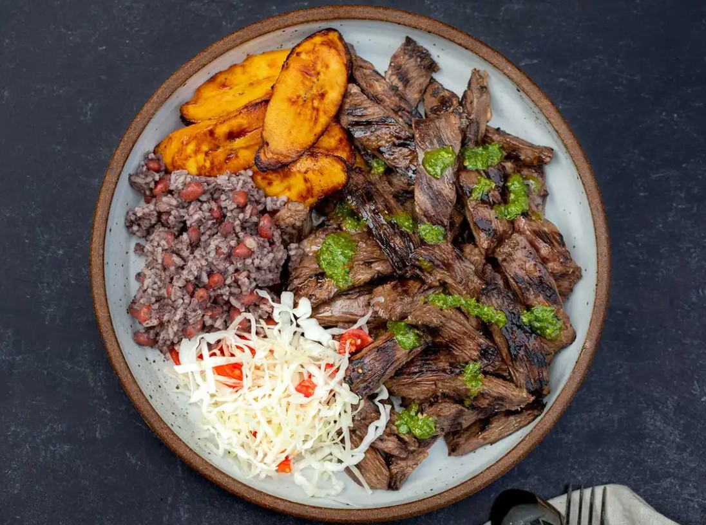

Nicaraguan-Style Carne Asada
Bittersweet Seville Oranges lend bright acidity and complex perfume to this Nicaraguan fritanga staple.
This preparation of carne asada is quite a departure from the grilled beef you might find at a Mexican taco stand. In this Nicaraguan-inspired version, the bitter-sour flavor of Seville orange complements and amplifies the rich, charred meat.
Carne asada is a particularly popular dish at informal Nicaraguan eateries called fritangas, which have also become late-night dining institutions in Miami, home to the largest Nicaraguan community in the United States. Skirt steak—cut from around the diaphragm of the cow, just under the ribs—is the most commonly used cut for this dish, but the marinade is excellent on just about any meat.
At more formal Nicaraguan steakhouses, carne asada is often grilled and plated in large pieces, but at more casual fritangas, the meat is often cut into strips for speedier cooking. When grilling these smaller pieces, be sure to lay the strips on the grill perpendicular to the grates to avoid losing your feast in the fire. Nicaraguan-style carne asada is fantastic on its own, but if you like a little sauce with your meat, drizzle on a few spoonfuls of homemade chimichurri, which Nicaragua claims as its own, as does Argentina.
Ingredients
- 1 large yellow onion, thinly sliced (3½ cups)
- 2 tsp. kosher salt
- 1⁄2 cup Seville orange juice, strained, from 2–4 oranges
- 1 tsp. beef bouillon powder (optional)
- 1⁄4 tsp. freshly ground black pepper
- 3 large garlic cloves, lightly smashed
- 1 1⁄2 tsp. finely grated Seville orange zest
- 2 lb. skirt steak, cut crosswise into 1-in. strips
- 2 Tbsp. vegetable oil